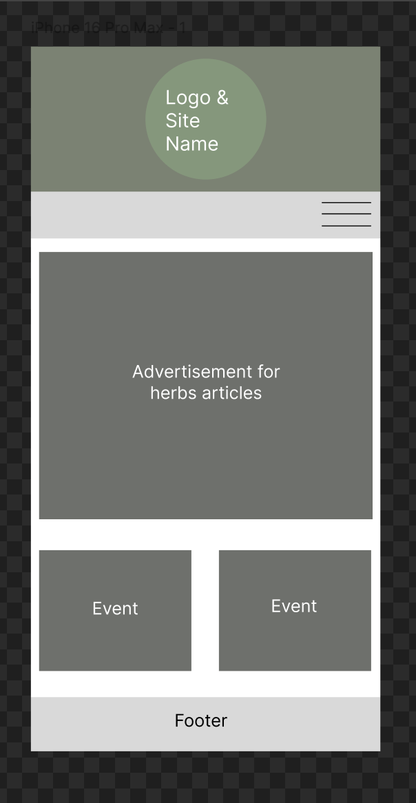
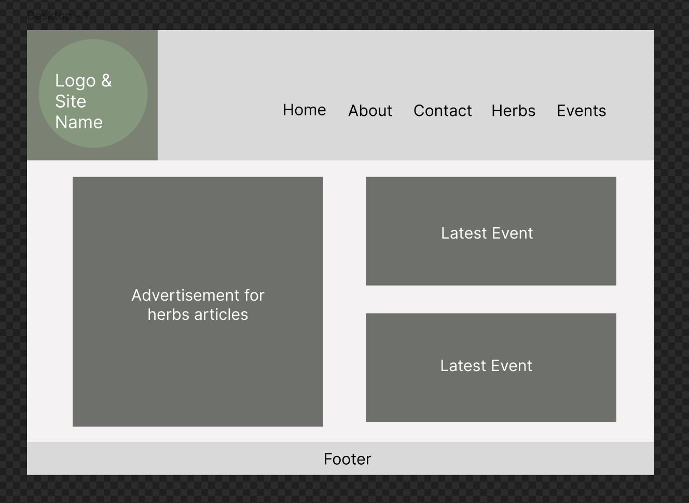

Site Name
Herb Informatory
The name represents a digital hub for general herbal knowledge and practical resources.
Optional domain availability: herbinformatory.org
Site Purpose
Herb Informatory will be an informational site focused on herbs and general herb knowledge, and dive into specific categories like common garden herbs or wild herbs. The site will also include:
- A navigational link to a general herbs page (listing all herbs).
- Subsections for "common garden herbs" and "wild herbs".
- An "Events/Workshops" section with a form to sign up for upcoming events.
- A "Contact" page for submitting questions or comments.
Scenarios
- What herbs are wild?
- What are upcoming workshops on herb uses?
Color Schema
Primary Colors: Muted Greens (rgb(69, 126, 111) & rgb(120, 165, 163)) - used for headers, buttons, and accents.
Secondary Color: Soft Tan (rgb(186, 158, 123)) - used for background and sections to maintain a natural feel.
Typography
Headings: Shadows Into Light Two - a handwritten-style font to evoke a natural feel.
Body Text: Roboto Flex - a clean, font for paragraphs and lists that also accents the font in the logo.
Wireframes
Mobile View:
Desktop View:
